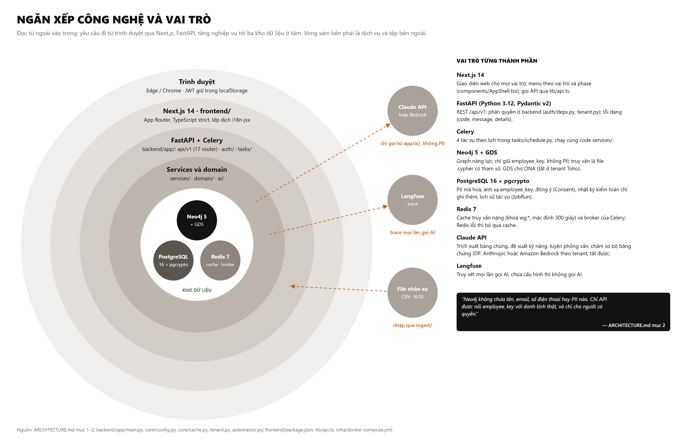
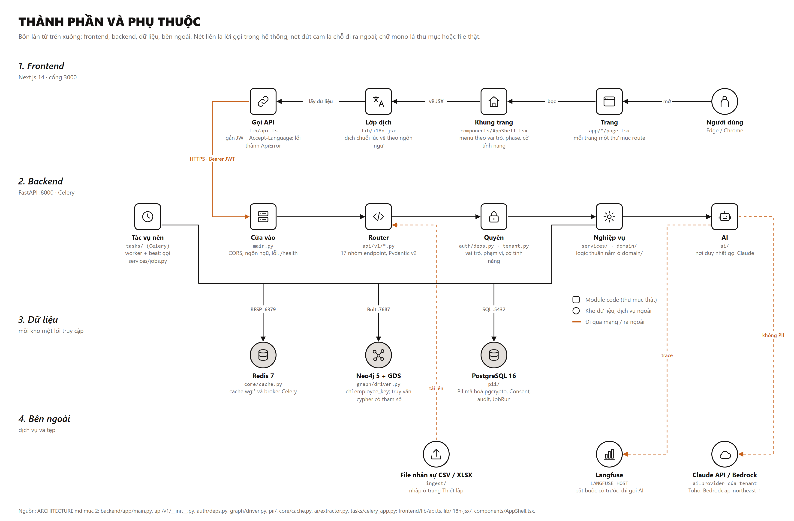
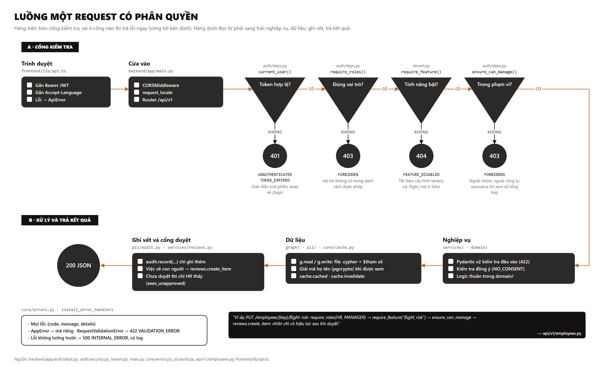
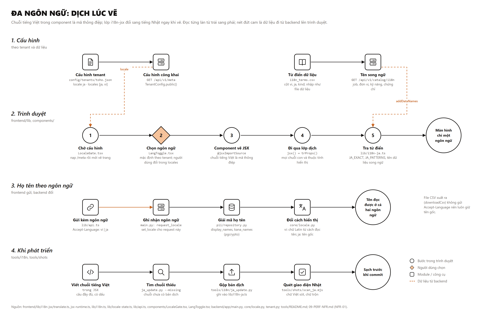
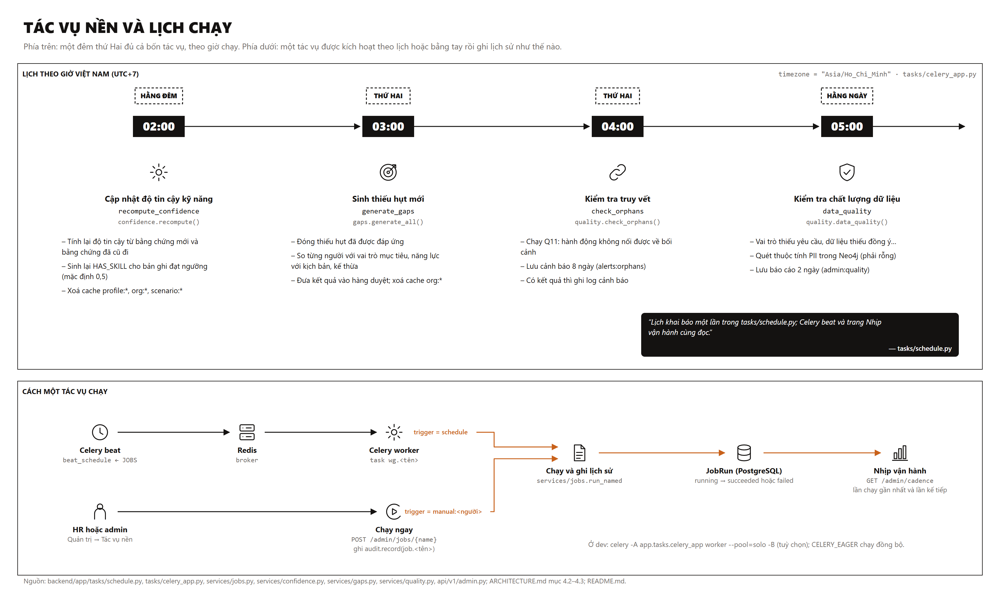
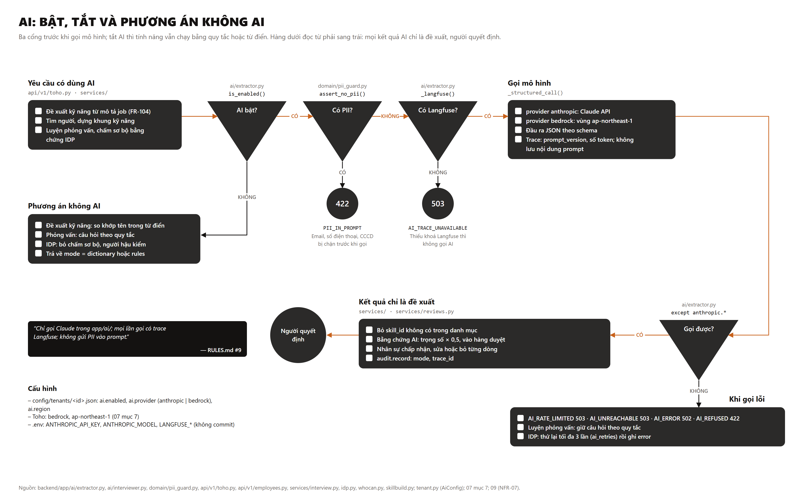
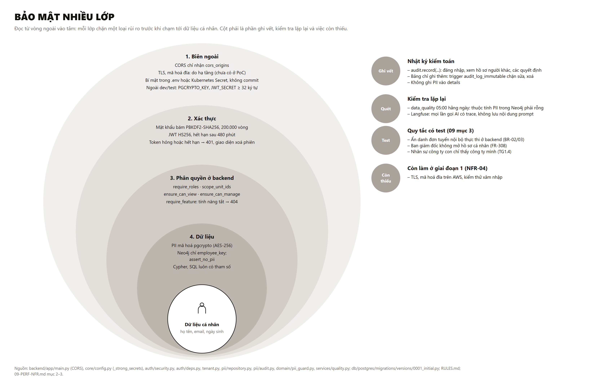
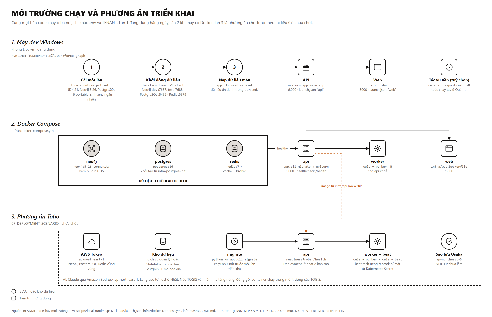
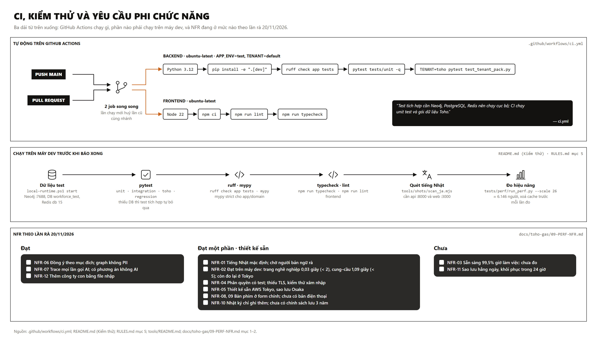

Kiến trúc kỹ thuật — Talent Flow
Ngày 23/11/2026. Tài liệu mô tả hệ thống đang chạy trong code, không phải bản thiết kế mong muốn. Mỗi mục có hình trước, chữ ngắn sau và dòng Nguồn ghi file thật. Phần triển khai production cho Toho Gas chưa chốt nên chỉ ghi là phương án (theo docs/toho-gas/07-DEPLOYMENT-SCENARIO.md). Hình sinh bằng python tools/diagrams/specs/ky_thuat.py rồi xuất PNG bằng node tools/diagrams/render_svg.mjs docs/kien-truc/img docs/kien-truc/img/kt-*.svg (bộ xuất có dò chữ chồng, chữ tràn). Sửa nội dung hình ở file spec, không sửa SVG bằng tay.
Mục lục
- Ngăn xếp công nghệ và vai trò
- Thành phần và phụ thuộc
- Luồng một request có phân quyền
- Đa ngôn ngữ: dịch lúc vẽ
- Tác vụ nền và lịch chạy
- AI: bật, tắt và phương án không AI
- Bảo mật nhiều lớp
- Môi trường chạy và phương án triển khai
- CI, kiểm thử và yêu cầu phi chức năng
- Điểm lệch và việc cần xác nhận
1. Ngăn xếp công nghệ và vai trò

| Thành phần | Phiên bản trong repo | Vai trò | Nơi dùng trong code |
|---|
| Next.js | 14.2 (React 18, TypeScript strict) | Giao diện web cho mọi vai trò | frontend/app/, components/, lib/ |
| FastAPI | Python 3.12, Pydantic v2 | REST /api/v1, phân quyền, cổng duyệt | backend/app/main.py, api/v1/ (17 router) |
| Celery | ≥ 5.4 | 4 tác vụ nền theo lịch | backend/app/tasks/ |
| Neo4j + GDS | 5.26 Community, plugin GDS | Graph năng lực; chỉ employee_key | backend/app/graph/ (driver.py, queries/*.cypher) |
| PostgreSQL + pgcrypto | 16 | PII mã hoá, Consent, nhật ký kiểm toán, JobRun, IDP | backend/app/pii/, migration Alembic |
| Redis | 7.4 | Cache truy vấn nặng, broker và backend của Celery | backend/app/core/cache.py, tasks/celery_app.py |
| Claude API | gói anthropic (tuỳ chọn [ai]) | Trích xuất bằng chứng, đề xuất kỹ năng, luyện phỏng vấn, chấm sơ bộ IDP | chỉ trong backend/app/ai/ |
| Langfuse | gói langfuse 2.x | Trace mọi lần gọi AI | backend/app/ai/extractor.py (_langfuse) |
- Ba kho dữ liệu chia việc rõ: graph cho quan hệ năng lực, PostgreSQL cho danh tính và nhật ký, Redis cho tốc độ. Redis lỗi thì
cache.cached bỏ qua cache, request vẫn chạy. - GDS dùng cho phân tích mạng lưới (ONA); tenant Toho tắt cờ
ona.
Nguồn: ARCHITECTURE.md mục 1–2; backend/pyproject.toml; frontend/package.json; infra/docker-compose.yml; backend/app/core/cache.py; config/tenants/toho.json.
2. Thành phần và phụ thuộc

Thư mục backend/app/ | Việc | Phụ thuộc chính |
|---|
main.py | Tạo app, CORS, middleware ngôn ngữ, bộ xử lý lỗi, /health (kiểm Neo4j, PostgreSQL, Redis) | api/v1, core/ |
api/v1/ | 17 nhóm router dưới tiền tố /api/v1 | auth/, services/, graph/, pii/ |
auth/ | JWT, CurrentUser, vai trò và phạm vi | graph/ (cây đơn vị) |
tenant.py | Cấu hình khách hàng, cờ tính năng, phase | config/tenants/<id>.json |
services/, domain/ | Nghiệp vụ; domain/ là logic thuần, không gọi DB | graph/, pii/, core/cache.py, ai/ |
graph/ | Driver Neo4j; mỗi truy vấn một file .cypher, nạp theo tên | Neo4j |
pii/ | SQLAlchemy, mã hoá pgcrypto, Consent, audit | PostgreSQL |
ingest/ | Nhập CSV/XLSX, tách PII, ghi graph theo lô 2.000 dòng | pii/, graph/ |
ai/ | Nơi duy nhất gọi Claude | Claude API hoặc Bedrock, Langfuse |
tasks/ | Celery app và lịch | Redis (broker), services/jobs.py |
- Frontend chỉ nói chuyện với backend qua
lib/api.ts (HTTPS, Authorization: Bearer, Accept-Language). Frontend không chạm kho dữ liệu. - Cổng khi chạy cục bộ: web 3000, API 8000, Neo4j 7687 (test 7688), PostgreSQL 5432, Redis 6379.
Nguồn: backend/app/main.py, api/v1/__init__.py, auth/deps.py, graph/driver.py, pii/, ingest/, tasks/celery_app.py; frontend/lib/api.ts; README.md (Cấu trúc mã nguồn).
3. Luồng một request có phân quyền

- Trình duyệt (
lib/api.ts → request()): gắn JWT từ localStorage, gắn Accept-Language. Nhận 401 thì xoá phiên, chuyển về /login. Lỗi trả về thành ApiError {status, code, message, details}. - Cửa vào (
main.py): CORSMiddleware chỉ nhận CORS_ORIGINS; middleware request_locale ghi ngôn ngữ cho request. - Cổng kiểm tra (thực thi ở backend, không chỉ ẩn trên giao diện). Endpoint không cần cổng nào thì bỏ qua cổng đó:
| Cổng | Hàm | Sai thì |
|---|
| Đăng nhập | current_user → decode_token (HS256) | 401 UNAUTHENTICATED hoặc TOKEN_EXPIRED |
| Vai trò | require_roles(...); HR tự mở rộng sang hr_group, hr_company | 403 FORBIDDEN |
| Tính năng | require_feature("flight_risk" | "ona" | …) | 404 FEATURE_DISABLED |
| Phạm vi | ensure_can_view, ensure_can_manage, scope_unit_ids, scope_keys | 403 FORBIDDEN |
- Nghiệp vụ: Pydantic kiểm tra đầu vào (422
VALIDATION_ERROR), kiểm tra đồng ý (NO_CONSENT), logic thuần trong domain/. - Dữ liệu:
g.read / g.write(tên_truy_vấn, **tham_số); giải mã họ tên bằng pgcrypto chỉ khi người xem có quyền; cache.cached và cache.invalidate. - Ghi vết:
audit.record(db, actor, role, action, ...) vào bảng chỉ ghi thêm. Việc về con người (Gap, nhãn rủi ro, bằng chứng AI…) đi qua reviews.create_item; dữ liệu chưa duyệt chỉ HR thấy (sees_unapproved).
Phạm vi theo vai trò (auth/deps.py):
scope_unit_ids: hr, hr_group, admin → toàn nhóm; hr_company → các đơn vị của công ty mình; manager, posting_owner → đơn vị mình phụ trách và đơn vị con; vai trò khác → rỗng.can_view_employee (mở hồ sơ một người): nhóm HR trong phạm vi công ty; quản lý, phòng nhận người trong đơn vị mình; nhân viên và quản lý xem hồ sơ của chính mình. executive, dx_office không mở hồ sơ cá nhân (chỉ số tổng hợp). Hàm này không mở hồ sơ cho admin.ensure_can_manage (ghi bằng chứng, tạo hành động): HR trong phạm vi, hoặc quản lý cho người trong nhóm (không tự ghi cho mình).
Nguồn: backend/app/auth/deps.py, auth/security.py, tenant.py (require_feature), main.py, core/errors.py, pii/audit.py, api/v1/employees.py (ví dụ propose_flight_risk, add_evidence); backend/app/domain/enums.py (UserRole); frontend/lib/api.ts.
4. Đa ngôn ngữ: dịch lúc vẽ

- Ngôn ngữ mặc định lấy từ tenant:
/api/v1/meta (không cần đăng nhập) trả locale và locales. Toho: ja, cho phép đổi sang vi. LocaleGate chờ /meta rồi mới vẽ trang; LangToggle chỉ hiện khi tenant có từ hai ngôn ngữ. - **Lớp
i18n-jsx**: trang khai báo /** @jsxImportSource @/lib/i18n-jsx */, nên mọi phần tử JSX đi qua jsx() → trProps(). Chuỗi tiếng Việt là mã thông điệp; bản dịch tra trong lib/i18n-ja.ts (JA_EXACT khớp nguyên chuỗi, JA_PATTERNS cho chuỗi có tham số) và từ điển dữ liệu song ngữ (/catalog/i18n, nhập từ i18n_terms.csv). Đổi ngôn ngữ thì LocaleGate vẽ lại cả cây. - Họ tên: backend nhận
Accept-Language; giao diện tiếng Việt hiển thị chữ Latin dựng từ cách đọc tên (core/locale.py, kana_to_romaji), giao diện tiếng Nhật giữ tên gốc. File CSV xuất ra không gửi header này nên luôn giữ tên gốc. - Quy trình thêm chuỗi: viết tiếng Việt trong JSX →
tools/i18n/ja_update.py --missing → gộp bản dịch → tools/shots/scan_ja.mjs phải sạch trước khi commit (giao diện không trộn hai ngôn ngữ).
Nguồn: frontend/lib/i18n-jsx/translate.ts, jsx-runtime.ts, lib/i18n.ts, lib/locale-state.ts, lib/api.ts, components/LocaleGate.tsx, LangToggle.tsx; backend/app/api/v1/home.py (/meta), main.py, core/locale.py, tenant.py; tools/README.md.
5. Tác vụ nền và lịch chạy

| Giờ (UTC+7) | Nhịp | Tác vụ | Hàm | Kết quả |
|---|
| 02:00 | Hằng đêm | recompute_confidence | confidence.recompute() | Tính lại độ tin cậy, sinh lại HAS_SKILL khi đạt ngưỡng tenant (mặc định 0,5), xoá cache profile:*, org:*, scenario:* |
| 03:00 | Thứ Hai | generate_gaps | gaps.generate_all() | Đóng Gap đã đáp ứng; sinh Gap cá nhân, năng lực, kế thừa; vào hàng duyệt |
| 04:00 | Thứ Hai | check_orphans | quality.check_orphans() | Chạy Q11; lưu cảnh báo 8 ngày |
| 05:00 | Hằng ngày | data_quality | quality.data_quality() | Các kiểm tra chất lượng và quét thuộc tính PII trong Neo4j; lưu báo cáo 2 ngày |
tasks/schedule.py (JOBS) là nguồn lịch duy nhất cho Celery beat và trang Nhịp vận hành (GET /admin/cadence).- Mỗi lần chạy đi qua
services/jobs.run_named và ghi JobRun (running → succeeded / failed) trong PostgreSQL. HR hoặc admin chạy ngay bằng POST /admin/jobs/{name}, có audit.record. - Ở dev, worker là tuỳ chọn:
celery -A app.tasks.celery_app worker --pool=solo -B -l info; biến CELERY_EAGER cho chạy đồng bộ.
Nguồn: backend/app/tasks/schedule.py, tasks/celery_app.py, services/jobs.py, services/confidence.py, services/gaps.py, services/quality.py, api/v1/admin.py; ARCHITECTURE.md mục 4.2–4.3; README.md.
6. AI: bật, tắt và phương án không AI

- Bật khi (
ai/extractor.py, is_enabled): ai.enabled của tenant là true và có đường gọi: provider = bedrock hoặc có ANTHROPIC_API_KEY. Toho: bedrock, vùng ap-northeast-1. - Trước mỗi lần gọi:
assert_no_pii chặn văn bản giống email, số điện thoại, số CCCD (422 PII_IN_PROMPT); thiếu khoá Langfuse thì không gọi (503 AI_TRACE_UNAVAILABLE). Trace chỉ ghi số liệu (prompt_version, số token), không ghi nội dung prompt. - Lỗi gọi:
AI_RATE_LIMITED 503, AI_UNREACHABLE 503, AI_ERROR 502, AI_REFUSED 422.
| Chức năng | Có AI | Không AI hoặc AI lỗi |
|---|
| Đề xuất kỹ năng từ mô tả job (FR-104) | suggest_job_skills | match_job_skills: so khớp tên trong từ điển, mức 3, should |
| Tìm người theo câu hỏi, dựng khung kỹ năng | suggest_job_skills | so khớp từ điển (match_question, find_in_text) |
| Luyện phỏng vấn | interviewer.generate_questions | câu hỏi theo quy tắc; AI lỗi cũng rơi về quy tắc |
| Chấm sơ bộ bằng chứng IDP | check_evidence, thử lại ai_retries (3) | ai_verdict = skipped, người hậu kiểm |
| Trích xuất bằng chứng từ sản phẩm công việc | extract_skills | không có phương án: trả 503 AI_DISABLED |
Mọi kết quả AI là đề xuất: bằng chứng AI có trọng số × ai_extracted_factor (0,5) và vào hàng duyệt; đề xuất kỹ năng được nhân sự chấp nhận, sửa hoặc bỏ từng dòng; audit.record lưu mode và trace_id.
Nguồn: backend/app/ai/extractor.py, ai/interviewer.py, domain/pii_guard.py, api/v1/toho.py, api/v1/employees.py, services/interview.py, services/idp.py, services/whocan.py, services/skillbuild.py, tenant.py (AiConfig); RULES.md #9; 07-DEPLOYMENT-SCENARIO.md mục 7.
7. Bảo mật nhiều lớp

| Lớp | Cơ chế | File |
|---|
| Biên ngoài | CORS theo CORS_ORIGINS; ngoài APP_ENV dev/test, PGCRYPTO_KEY và JWT_SECRET phải ≥ 32 ký tự và không phải giá trị mẫu; bí mật chỉ trong .env (không commit) hoặc Kubernetes Secret | main.py, core/config.py (_strong_secrets), .env.example |
| Xác thực | Mật khẩu PBKDF2-SHA256, 200.000 vòng, có salt; JWT HS256, hạn mặc định 480 phút | auth/security.py, core/config.py |
| Phân quyền | Vai trò, phạm vi đơn vị / công ty, cờ tính năng, cổng duyệt; ẩn danh đơn tuyển nội bộ ở backend | auth/deps.py, tenant.py, services/market.py |
| Dữ liệu | PII mã hoá pgp_sym_encrypt (AES-256, S2K mode 1); Neo4j chỉ employee_key, assert_no_pii chặn ghi; truy vấn Cypher và SQL luôn có tham số | pii/repository.py, domain/pii_guard.py, graph/driver.py |
| Ghi vết | Bảng audit chỉ ghi thêm (trigger audit_log_immutable); ghi đăng nhập, xem hồ sơ người khác, các quyết định | pii/audit.py, migration 0001_initial.py |
Còn thiếu ở PoC (NFR-04): TLS và mã hoá đĩa do hạ tầng, kiểm thử xâm nhập.
Nguồn: các file trong bảng; RULES.md mục 2; 09-PERF-NFR.md mục 1–3.
8. Môi trường chạy và phương án triển khai

| Môi trường | Cách chạy | Ghi chú |
|---|
| Máy dev Windows (đang dùng) | scripts/local-runtime.ps1 setup một lần, start mỗi lần; API và web theo .claude/launch.json (api :8000, web :3000) | Runtime và dữ liệu ở %USERPROFILE%\.workforce-graph (đổi bằng WG_RUNTIME), ngoài OneDrive. Redis dùng redis-server có sẵn trên máy |
| Docker Compose | docker compose -f infra/docker-compose.yml --env-file .env up -d --build | api chờ ba kho dữ liệu healthy, chạy app.cli migrate rồi uvicorn; worker chạy celery worker -B, chờ api healthy |
| Phương án Toho (chưa chốt) | AWS Tokyo ap-northeast-1, sao lưu Osaka ap-northeast-3; Kubernetes: api ≥ 2 bản sao, worker, beat tách riêng, migrate là Job | Chưa có manifest K8s. AI qua Bedrock trong vùng Tokyo; Langfuse tự host ở Nhật. Nếu TOGIS vận hành hạ tầng riêng: container chạy trong môi trường TOGIS |
Biến cấu hình (tên, không có giá trị): APP_ENV, NEO4J_URI, NEO4J_USER, NEO4J_PASSWORD, DATABASE_URL, PGCRYPTO_KEY, REDIS_URL, JWT_SECRET, JWT_TTL_MINUTES, CORS_ORIGINS, ANTHROPIC_API_KEY, ANTHROPIC_MODEL, LANGFUSE_PUBLIC_KEY, LANGFUSE_SECRET_KEY, LANGFUSE_HOST, NEXT_PUBLIC_API_URL, TENANT, ROLLOUT_PHASE. Đổi TENANT cần khởi động lại API.
Nguồn: README.md (Chạy môi trường dev, Cấu hình theo khách hàng), scripts/local-runtime.ps1, .claude/launch.json, infra/docker-compose.yml, infra/api.Dockerfile, infra/web.Dockerfile, infra/k8s/README.md, .env.example, docs/toho-gas/07-DEPLOYMENT-SCENARIO.md mục 1, 6, 7.
9. CI, kiểm thử và yêu cầu phi chức năng

CI (.github/workflows/ci.yml, chạy khi push main và mỗi pull request; lần chạy mới huỷ lần cũ cùng nhánh):
- Backend (Python 3.12,
APP_ENV=test): ruff check app tests → pytest tests/unit -q → pytest tests/unit/test_tenant_pack.py với TENANT=toho. - Frontend (Node 22):
npm ci → npm run lint → npm run typecheck. - Test tích hợp (Neo4j, PostgreSQL, Redis) không chạy trên CI; chạy trên máy dev với instance riêng (Neo4j :7688, DB
workforce_test, Redis db 15), tự bỏ qua khi không có DB.
Hiệu năng (máy dev, ≈ 6.146 người, xoá cache trước mỗi lần gọi, tests/perf/run_perf.py --scale 26): mọi API đo đều dưới mục tiêu; chậm nhất là báo cáo vốn nhân lực 1,77 giây (mục tiêu < 5). Hai chỗ đã sửa khi đo: ghi graph theo lô 2.000 dòng (write_batched); pgcrypto chuyển sang S2K mode 1 để giải mã 6.000 họ tên còn 0,6 giây. Còn phải đo lại trên hạ tầng Tokyo.
| Mức | NFR |
|---|
| Đạt | 06 (đồng ý theo mục đích, graph không PII), 07 (trace AI, có phương án không AI), 12 (thêm công ty con bằng file) |
| Đạt một phần / thiết kế sẵn | 01 (tiếng Nhật mặc định, chờ người bản ngữ rà), 02 (đạt trên máy dev), 04 (thiếu TLS, kiểm thử xâm nhập), 05 (thiết kế AWS Tokyo), 08 (bàn phím ở form chính), 09 (chưa có bản điện thoại), 10 (chưa có chính sách lưu 3 năm) |
| Chưa | 03 (sẵn sàng 99,5%), 11 (sao lưu hằng ngày, khôi phục 24 giờ) |
Nguồn: .github/workflows/ci.yml; README.md (Kiểm thử); RULES.md mục 5; tools/README.md; docs/toho-gas/09-PERF-NFR.md mục 1–2.
10. Điểm lệch và việc cần xác nhận
Các điểm dưới đây thấy khi rà code; chưa sửa, cần chủ dự án quyết.
- Múi giờ lịch tác vụ —
celery_app.py và schedule.py cố định Asia/Ho_Chi_Minh (UTC+7). Khi chạy cho Toho ở Nhật (UTC+9), 02:00 giờ Việt Nam là 04:00 giờ Nhật. Chưa có cấu hình múi giờ theo tenant. - **Sơ đồ trong
ARCHITECTURE.md mục 2** vẽ Celery gọi Claude API. Trong code, AI được gọi trong request (API → services/ → ai/), không có tác vụ Celery nào gọi AI. - **
flush_outbox** — docstring services/notify.py nói có tác vụ đánh dấu hộp thư đi, nhưng hàm không nằm trong JOBS và không thấy nơi gọi. Email ở PoC chỉ được xếp hàng (queued). - Phiên bản Node — CI dùng Node 22,
infra/web.Dockerfile dùng node:20-alpine. - Langfuse host — mặc định trong
core/config.py là https://cloud.langfuse.com; phương án Toho là Langfuse tự host ở Nhật, nên khi triển khai phải đặt LANGFUSE_HOST. - Beat trong Compose chạy chung worker (
-B); infra/k8s/README.md muốn tách beat ở prod. Chưa có manifest Kubernetes nào. - **Thông điệp
AI_DISABLED** ở extract_skills luôn nói "Chưa cấu hình ANTHROPIC_API_KEY", kể cả khi nguyên nhân là tenant tắt AI.